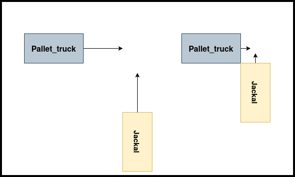
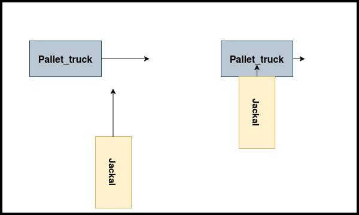

Scenario Manager
The scenario_manager package is a ROS2 package designed to manage and execute various robot scenarios involving teleportation, speed setting, and collision simulations. It provides action servers to control robot behavior and a tool for calculating Time to Collision (TTC).
Launching the Scenario Manager
To start the scenario_manager, launch it using the following command:
ros2 launch scenario_manager scenario_manager.launch.py
This initializes three action servers:
- teleport_action_server: Handles teleportation of robots.
- set_speed_action_server: Controls robot speed.
- collision_action_server: Configures scenarios where robots collide (only applicable to jackal and pallet_truck).
Collision Action Server
The collision_action_server configures collisions by setting speeds and initial positions for two robots to ensure a collision occurs. It requires:
- Angle: The approach angle.
- Speed of pallet_truck: The movement speed of the pallet truck.
- Collision Type: An enum from the simlan_custom_msg package specifying the type of collision.
Collision Types
There are three predefined collision types:
| Collision Type | Enum Value | Description |
|---|---|---|
| HEAD_ON | 0 |
Robots collide head-on. |
| PALLET_TRUCK_SIDE | 1 |
Pallet truck collides into the side of Jackal. |
| JACKAL_SIDE | 2 |
Jackal collides into the side of the pallet truck. |
Below are images illustrating the different collision types:
| Head-On Collision | Pallet Truck Side Collision | Jackal Side Collision |
|---|---|---|
|  |  |  |
Running a Scenario
To execute a scenario, use the following command:
ros2 launch scenario_execution_ros scenario_launch.py scenario:=<scenario_file>
Replace <scenario_file> with a specific scenario file, such as:
ros2 launch scenario_execution_ros scenario_launch.py scenario:=simulation/scenario_manager/scenarios/case1.osc
or scenario 6 can be run from the scenarios.sh file like so:
./scenarios.sh 6
This runs a collision action client, executing multiple collision simulations with varying angles and speeds.
Note: If the robots are not moving or something feels like it is not working, there can be ghost processes from an earlier run. Stop the program and run
./control.sh killand try running again.
Time to Collision (TTC) Calculation
The package includes a TTC node that logs the Time to Collision (TTC) and Closest Point of Arrival (CPA) for two robots using the Minkowski-Difference, assuming constant speed and direction.
Running the TTC Node
ros2 run scenario_manager ttc
This node calculates and logs: - ‚è±Ô∏è TTC: The time at which the closest approach occurs. - üìç CPA: The closest distance between the two robots, assuming constant speed and trajectory.